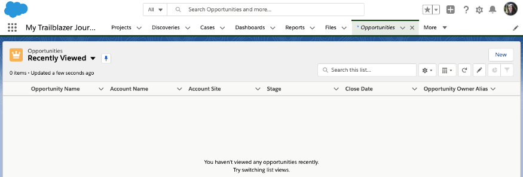
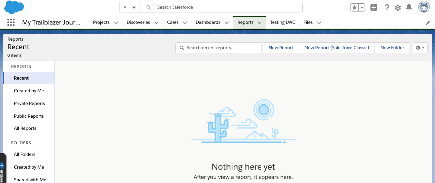

Running the Migration Project

Originally posted on Medium in May 2020
This is the second in my series to help you manage the completion of your Lighting roll-out successfully. I am currently working on my third roll-out of Lightning and so am sharing some of my learnings to help ensure yours goes smoothly. Everything I speak about below are things that have worked for me, however, that doesn't mean it is the only way to do it. As with most things Salesforce, there are multiple ways of doing things, these are the way I found to be successful.
Roll Out Phase
How do I manage the project of migrating over to Lightning?
To start your project, you will need to determine to things, your rollout strategy and the scope of work covered by it.
Rollout Strategy
There are a variety of rollout strategies that can be used and what you decide upon will depend on the size and complexity of your Salesforce instance. The main two strategies are to roll out in groups of users (for example, either one team at a time, or one person from within each team) or a big bang approach of rolling it out to all users at once. I would highly recommend not considering the latter. My main reasoning is that even if you have managed to do as much research as possible into how the different areas of the business use Salesforce, there's almost always something somewhere that has been overlooked and the reputational risk of Lightning when this is discovered could lead to poor user adoption. If you move over teams at a time, you can ensure that it is working perfectly for one team before moving onto the next — and you can also learn from each iteration. The later teams should be quicker to roll out, as a lot of the changes will already have been made.
Scope of Rollout
When considering the scope of work for the project, the primary objective might be to ensure that all existing functionality remains available in Lightning. However, it may be from your research that you have identified inefficient processes, so it may be decided to make improvements to those as part of the rollout. Whatever the decisions are made, you need to ensure the business is clear what the scope is to avoid disappointment and potentially damaging the reputation of Lightning.
The video below goes into a bit more detail about planning your rollout.
Once these are agreed, your work is split into two categories: Change Management and Technical Implementation. Depending on the size of your company you may need to manage both aspects of these yourself, so make sure you plan carefully.
Change Management
However large or small your company is, you are going to have to manage the rollout of Lightning carefully to try and capture maximum user adoption possible, below are some suggestions on how to manage the change.
Lightning Champions
If your company is particularly large, you may want to consider running a formal Lightning Champion programme. These volunteers will be your early adopters and become cheerleaders for you. They will also be able to provide crucial feedback in the early stages to ensure that Lightning is set up in a way that is optimal for each team. In a more formal programme, you may want to consider incentives for your Champions, such as prizes or rewards.
In smaller companies, you may not run a formal Lightning Champions programme, however, you should still consider teams or users who have proven helpful in the past or who show a particular enthusiasm for Lighting, to become your early adopters and migrate them first.
Feedback
Now that you have a group of early adopters, make sure that you have a mechanism for them providing feedback to you about the use of Lightning. There are some solutions already built into Salesforce — such as the Switch to Classic Feedback Form or using a Chatter group. You could come up with some other tools too, such as a Google Form they can complete anonymously or even an Excel sheet to complete. How you collect the feedback is your choice, but make sure it is a way that is simplest for the user — remember they are helping you — whilst also being easy to track at your end.
Marketing
You'll need to market the change appropriately to gain as much buy-in with your end-users, increasing user adoption post rollout. If your company has a Marketing team, consider enlisting them to assist with this. Either way, Salesforce provides some email templates you could use as part of a drip campaign. They can be found as part of the Lightning Experience Enablement Pack. Consider other ways you can market it to — office posters in the break room, an article on the company Intranet.
Understanding the Marketing Rule of 7 can help you understand the different avenues you can use to help get engagement and buy-in. Although you are not selling anything externally for money, and therefore some of the suggestion may not be appropriate, it should give you some ideas for how to move things forward internally to sell the idea of Lightning.
Training
Training will need to be provided to the majority of the end-users, and decisions will need to be made around who will deliver this. In a large company, you could consider a train the trainer with your Lightning Champions for them to train the rest of their areas. In smaller companies, you may be left to train them yourself.
Salesforce has provided a template PowerPoint presentation in their Enablement Pack, but ensure that you only use this as a guide for your presentation, which should follow your company's branding guidelines and only contain the relevant information. Include screenshots from your own Salesforce instance where you can, and plan for live demos, but include videos in the presentation in case anything goes wrong with the demo, such issues connecting to the internet.
Trailhead also offers a wide range of free resources to help train a full spectrum of Salesforce users across a breadth of topics. Consider your different areas you are rolling out to and which trails might be most relevant to them and then guide your users to them. I can recommend this generic one to get started with — Learn to Work in Lightning Experience.
FAQs
There will be some frequently asked questions from your end-users. You can try to pre-empt them with a prepared FAQ sheet, and add to it has the implementation continues. Here are some examples that I have come across.
- Do I need to enter all my data again/If I update it in Lighting, will it update in Classic?
- Why is my List View empty? 
- Where are all my reports? 
All the data that sits behind the scenes remains the same and there is only one copy of the data. All your data is already available in Lightning, just as it was in Classic, and any update you do in either interface will reflect in the other.
When you go to an object tab — such as Opportunities — for the first time in Lightning, it will default to your “Recently Viewed” list view, but it will be empty. This doesn't mean all of your Opportunities have gone, it simply means that you haven't viewed any Opportunities in Lightning yet. As you use Lightning, your recently viewed opportunities will show here, or you can access other List Views from the drop-down available — even pinning them so they become the default view on the tab home.
When you go the Reports tab, the default view is Recent. If this is your first time looking at your reports in Lightning, you won't have any reports showing. Even if you search using the search bar just above the list, your report will not appear as you have not viewed it. Be sure to change your view on the left-hand side to the appropriate view (probably All Reports or you can go to All Folders if you know where the report you are trying to find is). It is probably a good idea to use the new Favorite functionality with the reports you are going to want to access regularly.